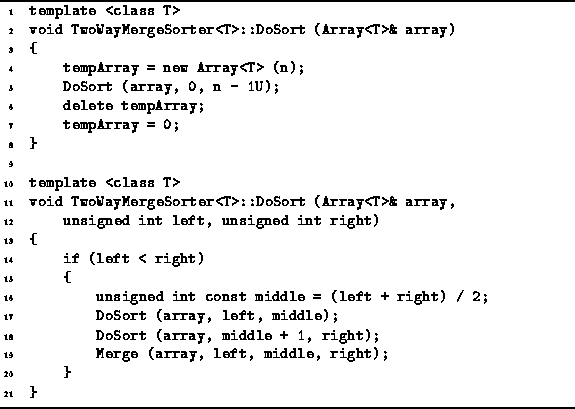

Data Structures and Algorithms
with Object-Oriented Design Patterns in C++
Data Structures and Algorithms
with Object-Oriented Design Patterns in C++
Program  gives the code for the two DoSort
member functions of the TwoWayMergeSorter class.
The main DoSort routine takes as its lone argument
a reference to the array to be sorted (line 2).
First, it allocates a temporary array,
the length of which is equal to the length of the array to be sorted (line 4).
Then it calls the second, recursive DoSort routine
which sorts the array (line 5).
After the array has been sorted,
the main DoSort deletes the temporary array (line 6).
gives the code for the two DoSort
member functions of the TwoWayMergeSorter class.
The main DoSort routine takes as its lone argument
a reference to the array to be sorted (line 2).
First, it allocates a temporary array,
the length of which is equal to the length of the array to be sorted (line 4).
Then it calls the second, recursive DoSort routine
which sorts the array (line 5).
After the array has been sorted,
the main DoSort deletes the temporary array (line 6).

Program: TwoWayMergeSorter<T> Class DoSort Member Function Definitions
The second DoSort routine implements the recursive, divide-and-conquer merge sort algorithm described above. The routine takes three parameters--array, left and right. The first is a reference to the array to be sorted and the latter two specify the subsequence of the array to be sorted. If the sequence to be sorted contains more than one element, the sequence is split in two (line 16), each half is recursively sorted (lines 17-18), and then two sorted halves are merged (line 19).
 Copyright © 1997 by Bruno R. Preiss, P.Eng. All rights reserved.
Copyright © 1997 by Bruno R. Preiss, P.Eng. All rights reserved.